Esto vas a poder hacer
3 ejemplos reales que vas a aprender a generar — desde lo más simple hasta una torre de 4 plantas. Pulsa los botones del menú superior si quieres saltar al ejemplo concreto.
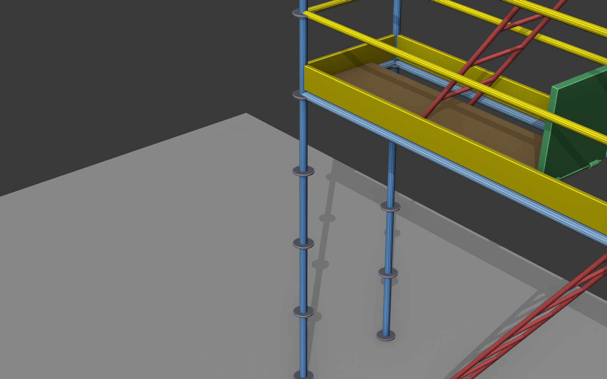
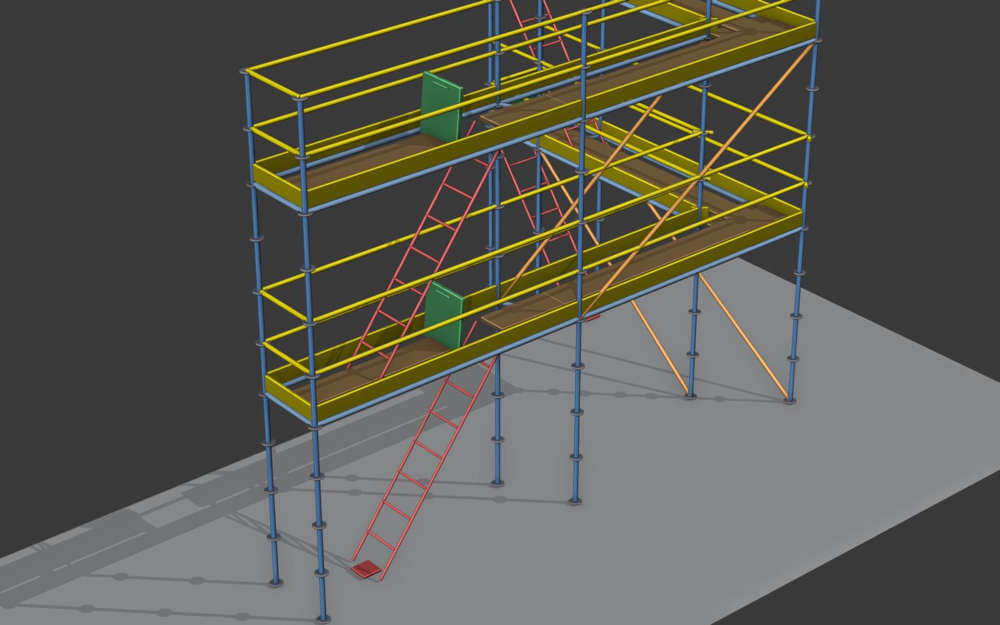
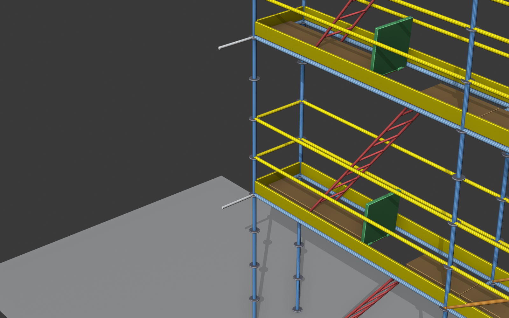
Tu primer andamio · 5 pasos · 5 minutos
No necesitas saber de cálculo estructural ni de modelado 3D. El addon te lo genera todo a partir de unos puntos de referencia.
Paso 1 · Instala el addon
→ Install… → andamios_addon.py
Carga el fichero del addon en Blender
En Blender:
- Edit → Preferences → Add-ons
- Pulsa Install… y elige el fichero
andamios_addon.py - Marca la casilla "Andamios trayectoria"
Aparece una pestaña Andamios en la barra lateral del viewport. Si no la ves, pulsa N.
Paso 2 · Coloca dos puntos en el espacio
Crea dos "empties" — son los marcadores que definen el recorrido del andamio
En el viewport 3D:
- Add → Empty → Plain Axes — uno en
(0, 0, 0) - Otro empty en
(8, 0, 0) - Renómbralos
P0yP1para encontrarlos rápido
Dos cruces 3D pequeñas separadas 8 m sobre el eje X. Estos serán los extremos de tu andamio.
Paso 3 · Añádelos a la lista del addon
Asigna los empties a la lista Trayectoria
En la pestaña Andamios → Trayectoria:
- Pulsa
+dos veces (crea dos filas) - En la primera fila → desplegable → elige
P0 - En la segunda fila → desplegable → elige
P1
Las dos filas se llenan con los nombres de los empties.
Paso 4 · Pulsa Generar
Un clic y tienes andamio
Deja los valores por defecto:
- Profundidad: 0.732 m (Layher 73)
- Plantas: 2
- Altura por planta: 2.0 m
Pulsa ⟳ Generar / Actualizar.
El andamio aparece en el viewport: postes, travesaños, plataformas, barandillas, escalera con trampilla y cruces, todo a la vez.
5 · ¡Listo!
🎉
¡Tienes tu primer andamio!
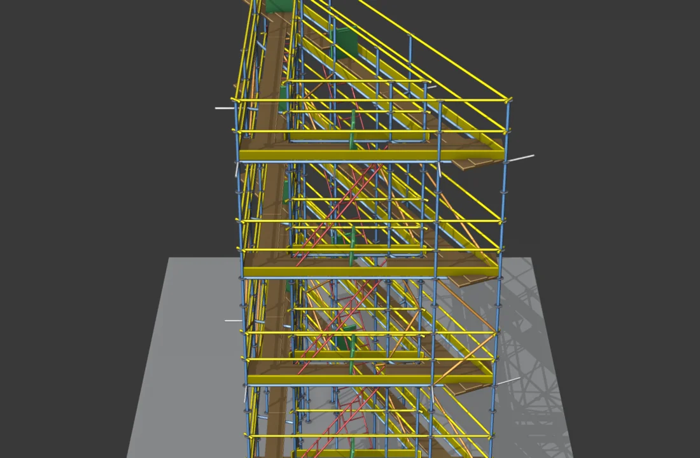
floor_count y verás cómo crece el andamio
en tiempo real (con Auto-update activo)Tu andamio actual son 8 m × 2 plantas con plataformas, barandillas, escalera con trampilla y cruces de arriostramiento — todo generado automáticamente.
¿Y ahora?
Casos prácticos paso a paso. Cada receta indica ★ dificultad, tiempo y prerequisitos.
📐 Andamio de fachada en L
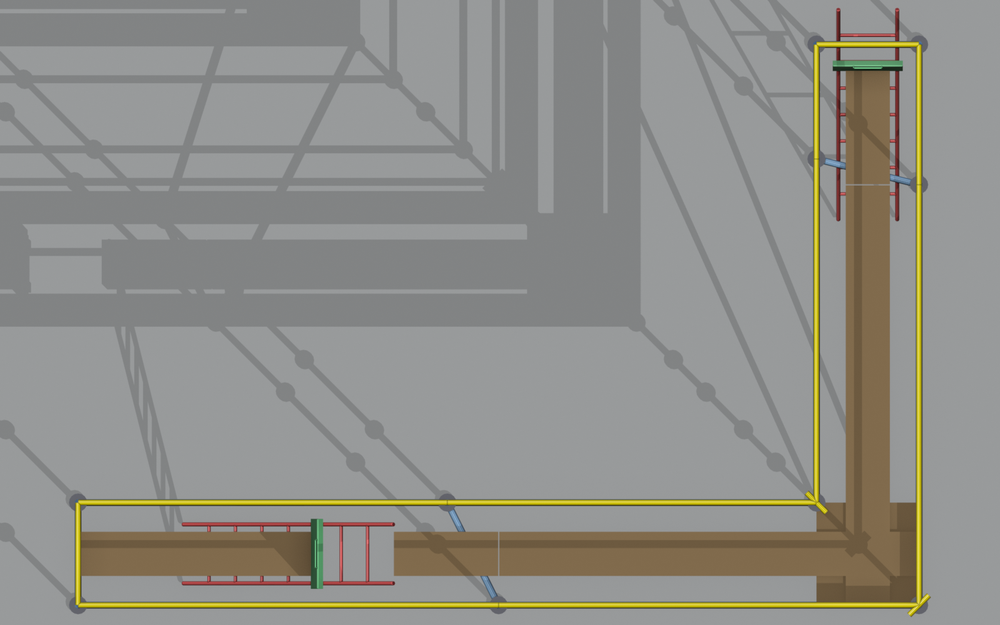
Crea 3 empties en planta
En la sección Trayectoria:
P0en(0, 0, 0)P1en(5, 0, 0)— primer tramo de 5 mP2en(5, 3, 0)— gira 90° y avanza 3 m
Añade los 3 a la lista
Pulsa el botón + tres veces y asigna cada empty
en orden. El orden importa: la polilínea va de
P0 → P1 → P2.
Pulsa Generar
El addon detecta la esquina en P1, calcula la
bisectriz
y genera una plataforma de esquina dedicada.
Andamio en L de dos tramos rectos unidos por una esquina con corner-plank.
🏗️ Torre cuadrada cerrada
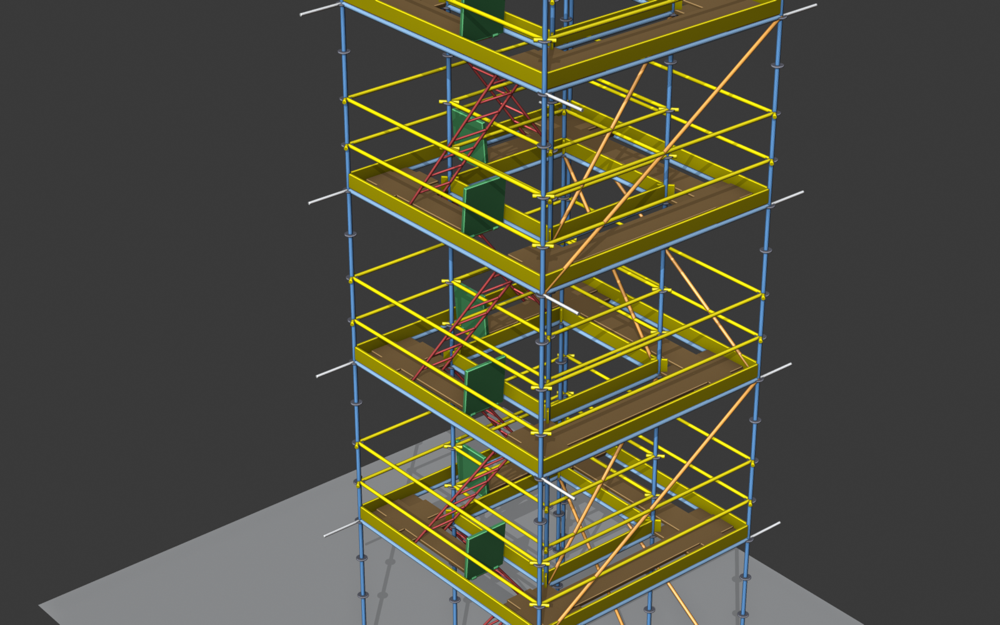
4 empties en cuadrado + closed_loop
Crea empties en (0,0,0), (3,0,0),
(3,3,0), (0,3,0). En el panel,
activa el toggle closed_loop: el último punto se
conectará con el primero.
Sube a 4 plantas y genera
En Dimensiones: floor_count = 4. Pulsa Generar.
Una torre cerrada con 4 niveles, ideal para mantenimiento de fachadas o como acceso vertical autónomo.
⚓ Andamio con anclajes (edificio 4 plantas)
¿Cuándo necesitas anclajes?
- Altura total > 8 m (lo exige EN 12811-2)
- Vas a aplicar viento zona B o C en el cálculo
- Densidad mínima: 1 anclaje por 4 m² de fachada
Andamio recto de 8 m × 4 plantas
Empties en (0,0,0) y (8,0,0),
floor_count = 4, floor_height = 2.0.
Activa anclajes
En la sección Anclajes:
add_ties = ONtie_every_bays = 2(cada 2 vanos)tie_every_floors = 1(cada planta)tie_length = 0.5 m
Tubos rojos saliendo de los postes traseros hacia la fachada. La densidad de anclajes es coherente con EN 12811-2.
🧮 Cálculo estructural Q3 + viento zona A
Caso típico: andamio de fachada con clase de servicio Q3 y viento moderado (CTE zona A, terreno II).
Genera el andamio (Quickstart)
Andamio recto 8 m × 2 plantas con valores por defecto.
Configura cargas en el panel "Cálculo estructural"
Despliega Cargas y combinación:
Comprueba modelo y ejecuta
En Ejecutar:
- Pulsa Comprobar modelo. Verifica errores de geometría antes de gastar tiempo en el cálculo.
- Si el semáforo es ✓ o ⚠, pulsa Ejecutar cálculo.
Tras unos segundos, el viewport se colorea por utilización (verde-amarillo-rojo) y aparece un toast tipo:
✓ ANDAMIO SEGURO · util max 0,55 · δ_max 14 mm · 0/71 fallos
Revisa resultados
Sub-paneles Resultados y Visualización muestran:
- Banner verde/ámbar/rojo según
util_max - Lista de elementos críticos clicables (≥ 0,85)
- Botón Mostrar deformada para ver el andamio desplazado ×100 (estilo ANSYS)
📄 Exportar plano CAD multihoja para subcontrata
Genera un HTML imprimible a PDF que cumple UNE-EN ISO 129-1: cotas en mm con notación N×L=T, escalas normalizadas, ejes A/B/C — 1/2/3.
Despliega "Exportar documentos"
El sub-panel Exportar documentos aparece tras generar el andamio.
Pulsa "Exportar plano CAD"
Selecciona la carpeta destino (en
Linux con Snap Firefox guarda en ~/Escritorio o
~/Documentos, no en /tmp).
Para andamio recto: 1 hoja con alzado + planta + iso.
Para U/L (≥ 2 tramos): 1 hoja overview + N hojas tramo, una por tramo recto.
Imprime a PDF
Abre el HTML en el navegador y pulsa Ctrl P:
- Tamaño del papel: A3 apaisado
- Márgenes: Ninguno
- Escala: 100 %
Material para consultar cuando ya sabes qué buscas: tablas de propiedades, catálogos de fabricante, normas aplicadas, glosario y solución de problemas.
🎮 Visor 3D interactivo
Andamio en U de 3 plantas como referencia. Arrastra para girar, scroll para zoom, doble click reset.
Modelo de demostración — andamio en U
Polilínea 4 puntos (0,0)→(6,0)→(6,4)→(0,4) · 3 plantas × 2 m
💡 Pasa el ratón sobre las piezas para ver cómo se llaman
🎬 Comparativas visuales
Cada propiedad del panel cambia el resultado de forma distinta. Mira las animaciones abajo para entender qué hace cada una sin necesidad de probarla en Blender.
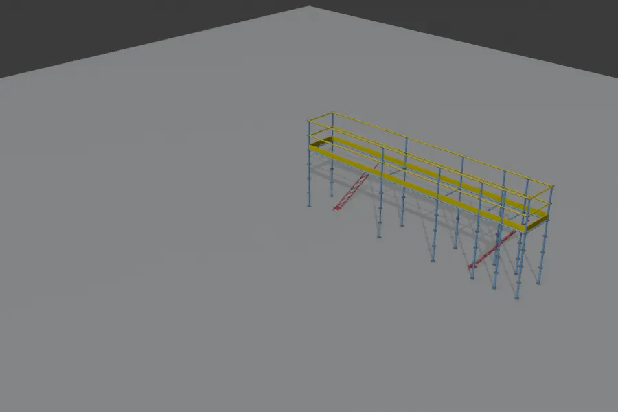
Plantas (floor_count)
Cuántos pisos horizontales tiene el andamio.
Cada planta sube floor_height metros (típico: 2 m).
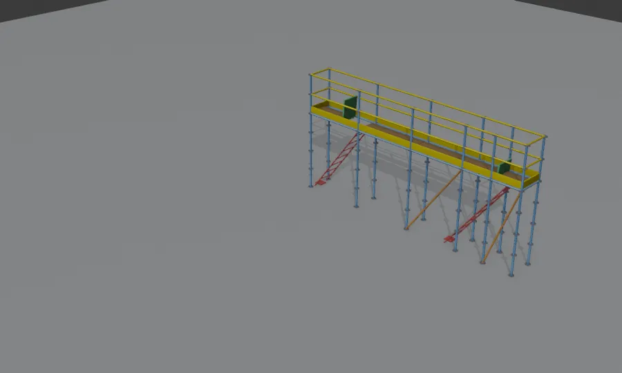
Profundidad (scaffold_depth)
Ancho del andamio perpendicular a la fachada. 0,732 m es el más común (Layher 73, 2 bandejas de 0,32 m).
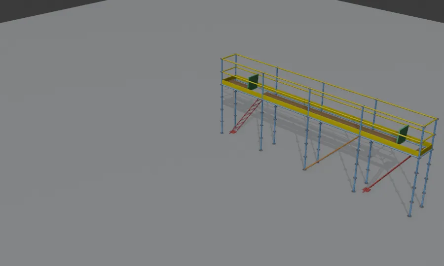
Catálogo de vanos (bay_length_catalog)
UNIFORM: divide el tramo en N vanos iguales. GENERIC: múltiplos de 50 cm. LAYHER: sólo longitudes Layher Allround estándar (0,73/1,09/1,40/1,57/2,07/2,57/3,07 m).
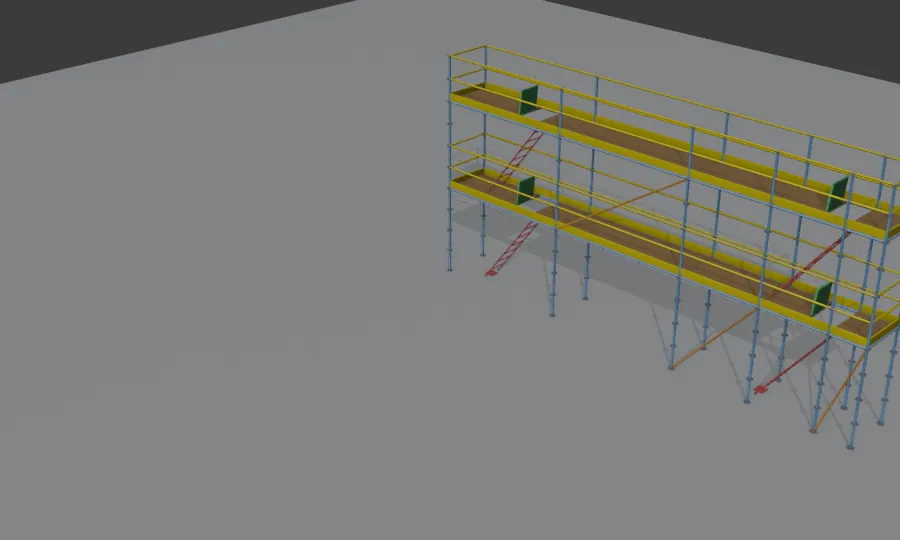
Patrón cruces (brace_pattern)
Dónde van las diagonales de arriostramiento. FRONT = sólo cara exterior (donde están los path_points). BACK = sólo cara opuesta (cerca de fachada). BOTH = ambas. ALT = alterna cada 4 vanos.
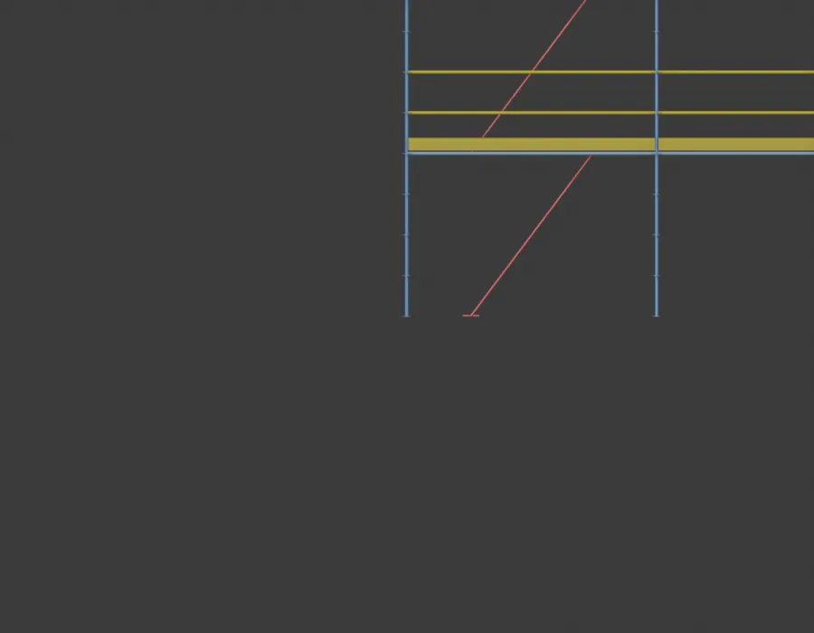
Subdivisión cruces (brace_subdivision)
Reduce la longitud individual de cada cruce. NONE = una diagonal larga (~2,9 m). HALF = zigzag a media altura (~2,3 m, 2× piezas). QUARTER = zigzag fino (~2,1 m, 4× piezas; sólo torres altas).
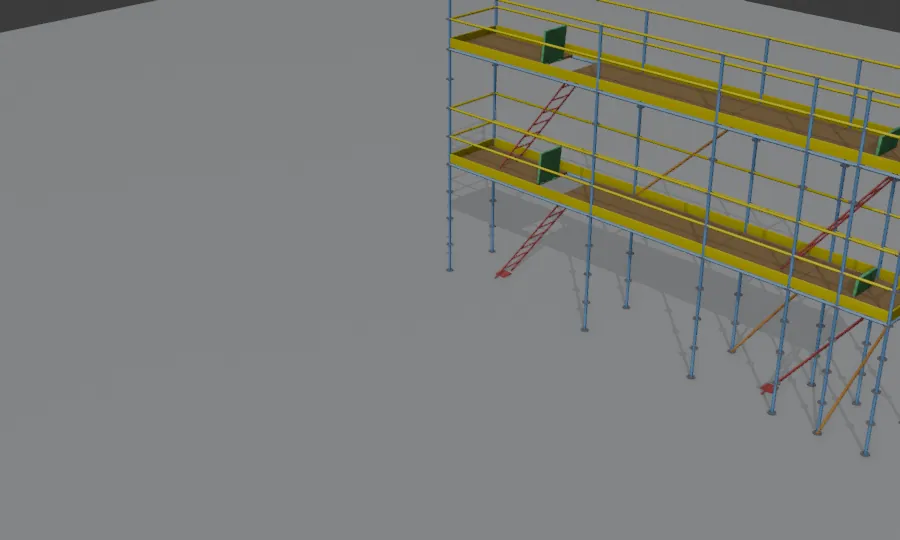
Plataformas (add_decks)
Una plataforma es el suelo de un piso, formado por varias bandejas paralelas. El toggle activa todas las plataformas; el ancho/nº de bandejas se configura debajo.
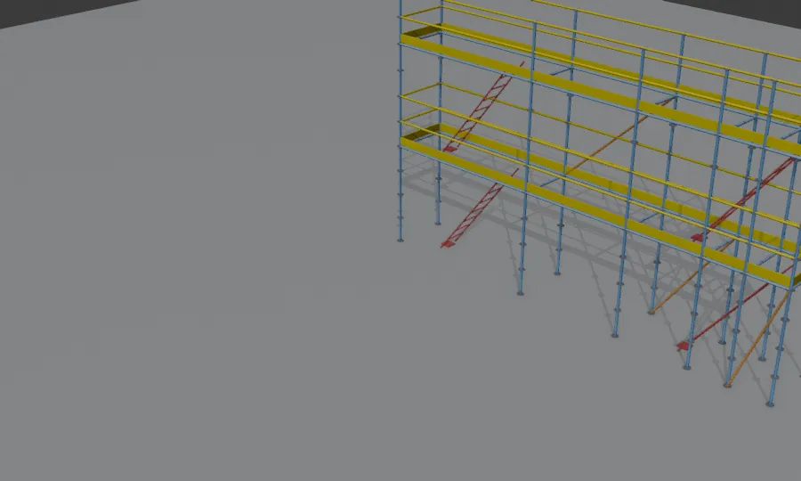
Cruces (add_braces)
Las cruces (diagonales) estabilizan el andamio contra empujes laterales. Sin cruces, un andamio tiende a "venirse abajo" en el cálculo.
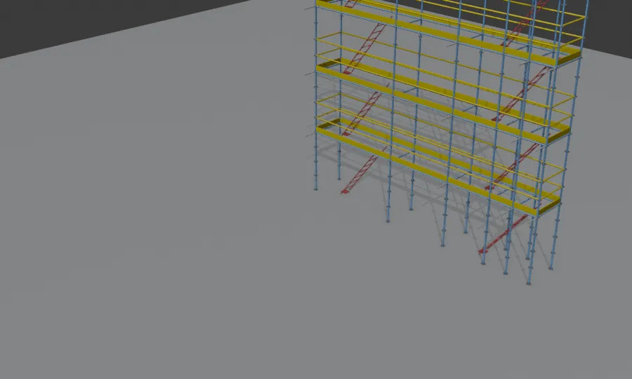
Anclajes a fachada (add_ties)
Tubos rojos que conectan el andamio a la fachada. EN 12811-2 los exige cuando la altura supera 8 m. Su densidad mínima: 1 anclaje cada 4 m² de fachada.
💡 Glosario visual
Cada animación equivale a girar una sola perilla del panel. Si no recuerdas qué hace una propiedad, vuelve aquí y compara los estados "antes / después".Tour del panel
El addon añade dos paneles a la pestaña Andamios de la barra lateral del 3D Viewport.
Geometría
Cálculo y export
Dimensiones — propiedades
Catálogo de longitudes (bay_length_catalog)
| Modo | Comportamiento |
|---|---|
| GENERIC | Combina piezas 0,5 / 1 / 1,5 / 2 / 3 / 4 m + compensador |
| LAYHER | Sólo Layher Allround: 0,73 / 1,09 / 1,40 / 1,57 / 2,07 / 2,57 / 3,07 m |
| UNIFORM | N bays iguales (objetivo section_length) |
Profundidad (scaffold_depth)
| 0,732 m | Layher 73 (más común, 2 bandejas de 0,32 m) |
| 1,090 m | Layher 109 (3 bandejas) |
| 0,640 m | Estrecho (acceso restringido) |
Cargas y combinación
Clases de servicio (Q) — EN 12811-1 §6.2.2
| Clase | Uso típico | Carga distribuida |
|---|---|---|
| Q1 | Inspección | ~75 kg/m² |
| Q2 | Uso ligero | ~150 kg/m² |
| Q3 | Uso general (≈4 trabajadores) | ~200 kg/m² |
| Q4 | Trabajos pesados | ~300 kg/m² |
| Q5 | Almacén ligero | ~450 kg/m² |
| Q6 | Almacén pesado | ~600 kg/m² |
Zona de viento — CTE / EN 1991-1-4
| Zona | v_b | Uso típico |
|---|---|---|
| A | 26 m/s | Interior, costa Mediterráneo norte |
| B | 27 m/s | Costa Mediterráneo sur, valles |
| C | 29 m/s | Costa Atlántica, montaña |
Combinaciones (qué le pides al cálculo)
El dropdown "Caso a comprobar" determina qué combinación de cargas verifica el solver. Los nombres del panel ya son descriptivos (no aparecen códigos crípticos como ULS_LeadL):
| Caso del panel | Cuándo usarlo |
|---|---|
| Resistencia — uso dominante | Caso típico: andamio de mantenimiento en altura razonable. Comprueba la rotura cuando el peso de trabajo es lo crítico. |
| Resistencia — viento dominante | Andamios altos o expuestos. El viento es lo que más exige. |
| Resistencia — levantamiento por viento | Verifica que el viento no levanta la estructura (carga de uso minorada). |
| Servicio — deformación característica | Comprueba la deflexión máxima (EN 12811-1 §10.3, δ ≤ L/100). |
Plano CAD multihoja
Cumple UNE-EN ISO 129-1. Para 1 tramo: 1 hoja con alzado + planta + iso. Para ≥ 2 tramos: 1 hoja overview + N hojas tramo (alzado local de cada tramo recto, sin aplastamiento).
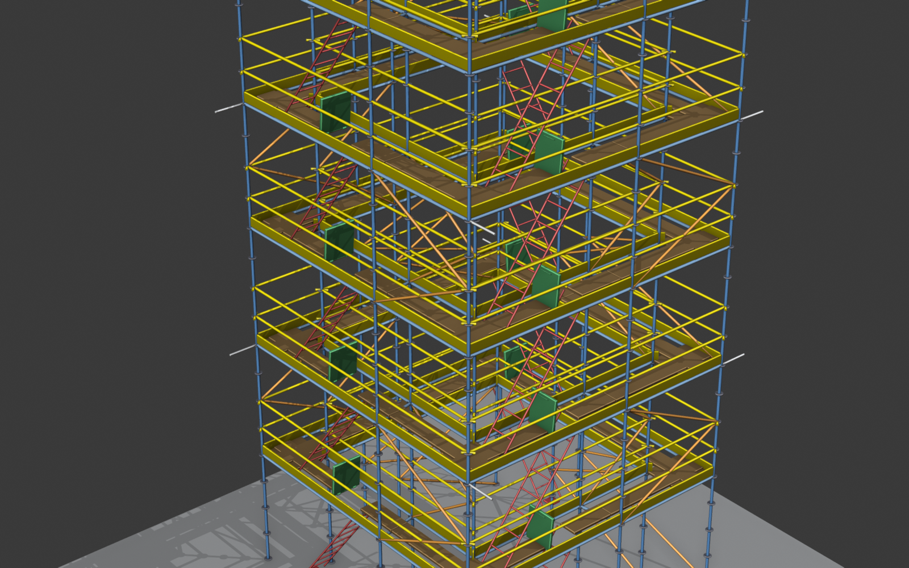
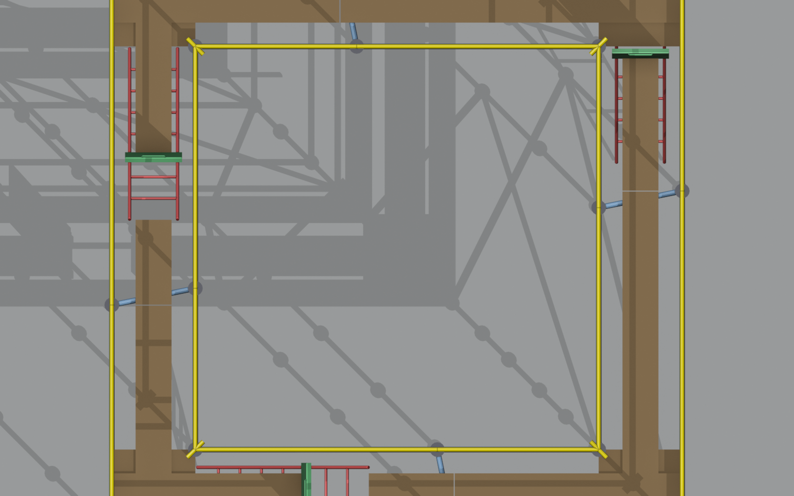
Exportar BOM e informe HTML
| Tipo | Botón | Salida |
|---|---|---|
| BOM | Exportar BOM HTML | HTML autocontenido con resumen, tabla por categoría, fotos representativas, glosario |
| Plano CAD | Exportar plano CAD (HTML) | 1 a N+1 hojas A3 con cotas normativas + cajetín |
| Informe | Exportar informe HTML | Resumen ejecutivo + 5 vistas + tarjetas con foto y diagnóstico narrativo |
Solución de problemas — orientado a síntomas
Busca el síntoma observable que más se parezca a tu caso.
El addon no aparece en el panel N tras instalar
Causa probable: el addon se instaló pero no se activó, o hay error en la consola al cargar.
- Edit → Preferences → Add-ons → busca "Andamios trayectoria"
- Marca la casilla. Si hay un error en rojo, abre Window → Toggle System Console
- Reinstala asegurándote de seleccionar
andamios_addon.py(no la carpeta entera ni un .zip)
Generé el andamio pero no veo nada en el viewport
Causa probable: los empties están todos en el mismo sitio, o la cámara no enfoca la zona correcta.
- Pulsa Home con el ratón sobre el viewport — la cámara enmarca todo
- Verifica que los empties tienen coordenadas distintas
(el error
"Los puntos i y j coinciden"sale en consola si están pegados) - Mira la colección Scaffold en el outliner: si contiene objetos, el andamio se generó correctamente
El cálculo tarda más de un minuto y parece colgado
Causa probable: modelo grande (> 1000 miembros) o PyNiteFEA no está bien instalado.
- Window → Toggle System Console — debería mostrar progreso del solver
- Si aparece
ModuleNotFoundError: No module named 'PyNite', instala con/snap/blender/current/5.1/python/bin/python3.13 -m pip install --user PyNiteFEA
- Si el modelo tiene cientos de plantas / cientos de bays, reduce
floor_counto desactivaadd_horizontal_bracespara acelerar
util max > 1 y no sé cómo bajarlo
Causa probable: el andamio no resiste las cargas configuradas.
- Mira la lista de elementos críticos en sub-panel Resultados — clic en cada fila enseña el diagnóstico narrativo
- Pulsa Auto-corregir en sub-panel Auto-corrección. El algoritmo prueba cambios (cruces, postes segmentados, bays más cortos) hasta lograr cumplimiento
- Si aún no cumple: añade anclajes (sub-panel del addon principal), sube la clase de poste a Ø60×3,2 / S355, o reduce la clase de servicio
Exporté el plano CAD pero las cotas se solapan o son ilegibles
Causa probable: el bbox del tramo no encaja con la escala normalizada elegida.
- Verifica que activas
fit_to_canvasen las hojas tramo (es default desde v0.7.10) — si no, las hojas tramo usan escala óptima entera (1:25, 1:33...) en lugar de las normalizadas - Si usaste una versión anterior, regenera con la última
- Para el problema de "1973 mm" en lugar de "2070 mm", revisa
prompt_acotacion_andamios.md§4 (snap modular)
Blender se cerró durante el cálculo
Causa probable: segfault del solver o de la visualización 3D — el addon registra automáticamente las últimas operaciones.
- Reabre Blender
- Panel Andamios → sección Diagnóstico → pulsa Exportar informe
- Guarda el
.txt(no en/tmpsi usas Snap Firefox) — contiene las últimas 100 operaciones con timestamps + traza C/Python - Comparte el fichero para que se diagnostique la causa
Las plataformas dejan un hueco grande contra los postes
Causa probable: el ancho de la profundidad no es múltiplo del ancho de las bandejas elegido.
- Pulsa Auto-cubrir bandejas (icono SHADERFX en panel principal) — el addon prueba todas las combinaciones de anchos hasta 6 piezas y elige la que deja menos hueco
- Si la solución es uniforme, la aplica directamente
- Si es mixta, sólo la informa — aplícala manualmente cambiando
deck_planks_countydeck_plank_width
Códigos de error
Lista exhaustiva por código para quien busca un mensaje específico.
| Código | Significado | Acción |
|---|---|---|
| E1 | Modelo sin barras estructurales | Genera el andamio antes de calcular |
| E11 | Polilínea con < 2 puntos | Añade más empties a la lista de Trayectoria |
| E12 | Entradas de path con obj=None | Asigna un empty a cada fila o elimínala |
| E13 | Colección Scaffold vacía o ausente | Pulsa Generar / Actualizar |
| W1 | < 4 postes en el modelo | Aviso (probablemente test); ignora si no es real |
| W2 | Barras de longitud < 1 mm | Bug en geometría — reporta el caso |
| W3 | Sin soportes definidos | El pipeline empotrará la base automáticamente |
| W4 | Postes desconectados | Comprueba que los travesaños llegan a sus nodos |
| W10 | Altura > 8 m sin anclajes | Activa add_ties (EN 12811-2) |
| W11 | Viento B/C sin anclajes | Activa anclajes — son críticos en estas zonas |
| W12 | Profundidad < 600 mm | Las bandejas estándar EN 12811-1 no caben |
| W13 | Hueco perpendicular > 25 mm | Pulsa Auto-cubrir o ajusta planks_count |
| W14 | floor_height fuera de [1,5; 2,5] | Revisa altura de planta |
Glosario
| Término | Significado |
|---|---|
| Bay | Vano entre dos postes consecutivos |
| Planta | Nivel horizontal con bandeja para trabajar |
| Profundidad | Ancho del andamio perpendicular a la fachada |
| Husillo | Pie regulable bajo cada poste (jack) |
| Roseta | Disco con agujeros para anclar travesaños y diagonales (Layher Allround) |
| Ledger | Travesaño horizontal entre postes |
| Brace | Diagonal de arriostramiento |
| Tie | Anclaje a fachada |
| Toe board | Rodapié de seguridad |
| Trapdoor | Trampilla en plataforma para acceso vertical |
| Compensador | Pieza singular de longitud no estándar al final del tramo |
| Bisectriz | Línea que parte el ángulo de una esquina en dos partes iguales — define dónde va el poste de esquina |
| Polilínea | Sucesión de puntos conectados que define el recorrido del andamio |
| CHS | Circular Hollow Section (sección tubular hueca) |
| EN 12811-1 | Norma europea de andamios de servicio |
| EN 1993-1-1 | Eurocódigo 3 — diseño de estructuras de acero |
| EN 1991-1-4 | Eurocódigo 1 — acciones de viento |
| ULS | Ultimate Limit State — Estado Límite Último |
| SLS | Serviceability Limit State — Estado Límite de Servicio |
| Utilización | M_Ed/M_Rd, fracción de la capacidad consumida (≤ 1 = OK) |
| K_φ | Rigidez rotacional de la unión (Layher Allround ≈ 80 kN·m/rad) |
| L_cr | Longitud crítica de pandeo |
| Q3 | Clase de servicio "uso general" — ~200 kg/m², 4 trabajadores |